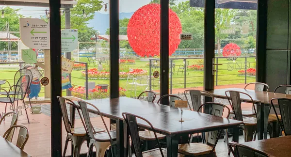
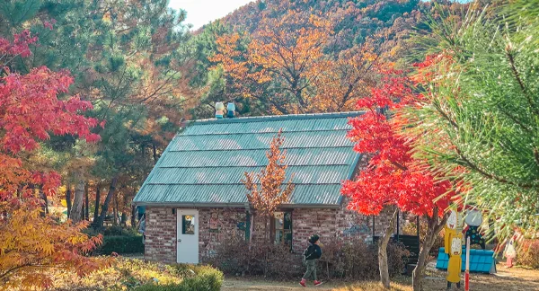
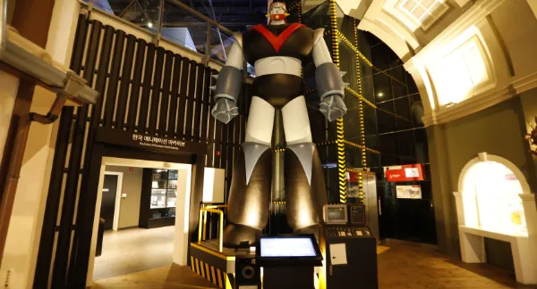

16장이 1초가 됩니다
에드워드 마이브리지가 1887년 펴낸 「동물의 운동」에는 달리는 들소를 찍은 연속 사진 16장이 실려 있습니다. 이 16장을 1초 동안 차례로 넘기면, 멈춘 그림이 달리기 시작합니다.
1층 동굴벽화에서
2층 기획전시실까지
전시내용


영상으로 먼저 만나기


박물관 안팎 나들이
 뮤지엄샵1층, 10:00 ~ 18:00
뮤지엄샵1층, 10:00 ~ 18:00
구름빵 카페1층, 10:00 ~ 18:00
야외 캐릭터공원박물관 바깥
토이로봇관함께 둘러보는 옆 전시관
관람 안내
- 관람시간
- 오전 10:00 ~ 오후 18:00입장마감 17:00
- 정기휴관
- 매주 월요일월요일이 공휴일인 경우 다음날
- 찾아오시는 길
- 강원특별자치도 춘천시
서면 박사로 854
공개 자료 출처 들소 연속 사진: 에드워드 마이브리지, 「Buffalo galloping」(동물의 운동 700번 판), 1887, Wikimedia Commons, 퍼블릭 도메인 · 바위 사진: Amal Kumar, 「Rock surface」, Poly Haven, Wikimedia Commons, CC0